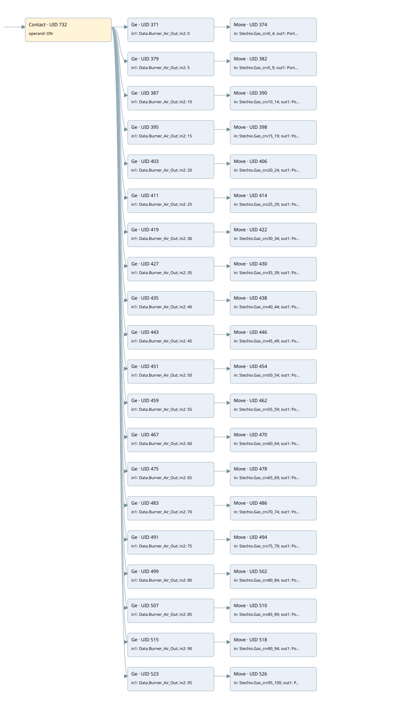

calculate the gas flow rate based on the theoretical ramp
control_stechio · 검색 색인 순서 1 · 원본 내부 NID 추정 1
백업 PLF 원본의 2712947 바이트 위치에서 복원한 XML. 검색 문서 1830의 객체 키 161022000711000000000000와 연결했다. 이름 해석 81/81개. 남은 RefId는 상수 또는 미해석 참조다.
연결 구조 다시 그리기
원본 Part/PCon/Wire를 이용한 연결도다. TIA 화면의 래더 배치 또는 실행 결과를 재현한 그림은 아니다. 핀 연결은 아래 표와 원본 XML을 기준으로 읽는다. 노드 위에 마우스를 두면 피연산자 이름을 볼 수 있다.

접점·코일·블록과 피연산자
| Part UID | Gate | Negated 핀 | 연결 피연산자 |
|---|---|---|---|
| 732 | Contact | operand = ON | |
| 371 | Ge | in1 = Data.Burner_Air_Out; in2 = 0 | |
| 374 | Move | in = Stechio.Gas_crv0_4; out1 = Portata_Presunta_GAS | |
| 379 | Ge | in1 = Data.Burner_Air_Out; in2 = 5 | |
| 382 | Move | in = Stechio.Gas_crv5_9; out1 = Portata_Presunta_GAS | |
| 387 | Ge | in1 = Data.Burner_Air_Out; in2 = 10 | |
| 390 | Move | in = Stechio.Gas_crv10_14; out1 = Portata_Presunta_GAS | |
| 395 | Ge | in1 = Data.Burner_Air_Out; in2 = 15 | |
| 398 | Move | in = Stechio.Gas_crv15_19; out1 = Portata_Presunta_GAS | |
| 403 | Ge | in1 = Data.Burner_Air_Out; in2 = 20 | |
| 406 | Move | in = Stechio.Gas_crv20_24; out1 = Portata_Presunta_GAS | |
| 411 | Ge | in1 = Data.Burner_Air_Out; in2 = 25 | |
| 414 | Move | in = Stechio.Gas_crv25_29; out1 = Portata_Presunta_GAS | |
| 419 | Ge | in1 = Data.Burner_Air_Out; in2 = 30 | |
| 422 | Move | in = Stechio.Gas_crv30_34; out1 = Portata_Presunta_GAS | |
| 427 | Ge | in1 = Data.Burner_Air_Out; in2 = 35 | |
| 430 | Move | in = Stechio.Gas_crv35_39; out1 = Portata_Presunta_GAS | |
| 435 | Ge | in1 = Data.Burner_Air_Out; in2 = 40 | |
| 438 | Move | in = Stechio.Gas_crv40_44; out1 = Portata_Presunta_GAS | |
| 443 | Ge | in1 = Data.Burner_Air_Out; in2 = 45 | |
| 446 | Move | in = Stechio.Gas_crv45_49; out1 = Portata_Presunta_GAS | |
| 451 | Ge | in1 = Data.Burner_Air_Out; in2 = 50 | |
| 454 | Move | in = Stechio.Gas_crv50_54; out1 = Portata_Presunta_GAS | |
| 459 | Ge | in1 = Data.Burner_Air_Out; in2 = 55 | |
| 462 | Move | in = Stechio.Gas_crv55_59; out1 = Portata_Presunta_GAS | |
| 467 | Ge | in1 = Data.Burner_Air_Out; in2 = 60 | |
| 470 | Move | in = Stechio.Gas_crv60_64; out1 = Portata_Presunta_GAS | |
| 475 | Ge | in1 = Data.Burner_Air_Out; in2 = 65 | |
| 478 | Move | in = Stechio.Gas_crv65_69; out1 = Portata_Presunta_GAS | |
| 483 | Ge | in1 = Data.Burner_Air_Out; in2 = 70 | |
| 486 | Move | in = Stechio.Gas_crv70_74; out1 = Portata_Presunta_GAS | |
| 491 | Ge | in1 = Data.Burner_Air_Out; in2 = 75 | |
| 494 | Move | in = Stechio.Gas_crv75_79; out1 = Portata_Presunta_GAS | |
| 499 | Ge | in1 = Data.Burner_Air_Out; in2 = 80 | |
| 502 | Move | in = Stechio.Gas_crv80_84; out1 = Portata_Presunta_GAS | |
| 507 | Ge | in1 = Data.Burner_Air_Out; in2 = 85 | |
| 510 | Move | in = Stechio.Gas_crv85_89; out1 = Portata_Presunta_GAS | |
| 515 | Ge | in1 = Data.Burner_Air_Out; in2 = 90 | |
| 518 | Move | in = Stechio.Gas_crv90_94; out1 = Portata_Presunta_GAS | |
| 523 | Ge | in1 = Data.Burner_Air_Out; in2 = 95 | |
| 526 | Move | in = Stechio.Gas_crv95_100; out1 = Portata_Presunta_GAS |
접점 경로를 펼친 조건식
Contact·O/A·비교기의 원본 연결을 읽기 쉽게 펼친 보조 해석이다. POWER는 전원 레일 시작을 뜻한다. 호출 블록·에지·타이머의 내부 동작과 다중 쓰기 순서는 이 표로 실행 검증하지 않았다. 미해석 핀과 RefId는 원문 연결표에서 확인한다.
| UID | 동작 | 대상 | 원본 접점 경로 | 내용 |
|---|---|---|---|---|
| 374 | Move | Portata_Presunta_GAS | (ON AND [Data.Burner_Air_Out >= 0]) | Move 입력 Stechio.Gas_crv0_4 |
| 382 | Move | Portata_Presunta_GAS | (ON AND [Data.Burner_Air_Out >= 5]) | Move 입력 Stechio.Gas_crv5_9 |
| 390 | Move | Portata_Presunta_GAS | (ON AND [Data.Burner_Air_Out >= 10]) | Move 입력 Stechio.Gas_crv10_14 |
| 398 | Move | Portata_Presunta_GAS | (ON AND [Data.Burner_Air_Out >= 15]) | Move 입력 Stechio.Gas_crv15_19 |
| 406 | Move | Portata_Presunta_GAS | (ON AND [Data.Burner_Air_Out >= 20]) | Move 입력 Stechio.Gas_crv20_24 |
| 414 | Move | Portata_Presunta_GAS | (ON AND [Data.Burner_Air_Out >= 25]) | Move 입력 Stechio.Gas_crv25_29 |
| 422 | Move | Portata_Presunta_GAS | (ON AND [Data.Burner_Air_Out >= 30]) | Move 입력 Stechio.Gas_crv30_34 |
| 430 | Move | Portata_Presunta_GAS | (ON AND [Data.Burner_Air_Out >= 35]) | Move 입력 Stechio.Gas_crv35_39 |
| 438 | Move | Portata_Presunta_GAS | (ON AND [Data.Burner_Air_Out >= 40]) | Move 입력 Stechio.Gas_crv40_44 |
| 446 | Move | Portata_Presunta_GAS | (ON AND [Data.Burner_Air_Out >= 45]) | Move 입력 Stechio.Gas_crv45_49 |
| 454 | Move | Portata_Presunta_GAS | (ON AND [Data.Burner_Air_Out >= 50]) | Move 입력 Stechio.Gas_crv50_54 |
| 462 | Move | Portata_Presunta_GAS | (ON AND [Data.Burner_Air_Out >= 55]) | Move 입력 Stechio.Gas_crv55_59 |
| 470 | Move | Portata_Presunta_GAS | (ON AND [Data.Burner_Air_Out >= 60]) | Move 입력 Stechio.Gas_crv60_64 |
| 478 | Move | Portata_Presunta_GAS | (ON AND [Data.Burner_Air_Out >= 65]) | Move 입력 Stechio.Gas_crv65_69 |
| 486 | Move | Portata_Presunta_GAS | (ON AND [Data.Burner_Air_Out >= 70]) | Move 입력 Stechio.Gas_crv70_74 |
| 494 | Move | Portata_Presunta_GAS | (ON AND [Data.Burner_Air_Out >= 75]) | Move 입력 Stechio.Gas_crv75_79 |
| 502 | Move | Portata_Presunta_GAS | (ON AND [Data.Burner_Air_Out >= 80]) | Move 입력 Stechio.Gas_crv80_84 |
| 510 | Move | Portata_Presunta_GAS | (ON AND [Data.Burner_Air_Out >= 85]) | Move 입력 Stechio.Gas_crv85_89 |
| 518 | Move | Portata_Presunta_GAS | (ON AND [Data.Burner_Air_Out >= 90]) | Move 입력 Stechio.Gas_crv90_94 |
| 526 | Move | Portata_Presunta_GAS | (ON AND [Data.Burner_Air_Out >= 95]) | Move 입력 Stechio.Gas_crv95_100 |
원본 배선 연결
| Wire UID | 동일 Wire 연결 끝점 |
|---|---|
| 734 | Powerrail {} ↔ Part 732.in |
| 610 | ORef 529 (ON) ↔ Part 732.operand |
| 733 | Part 732.out ↔ Part 371.pre ↔ Part 379.pre ↔ Part 387.pre ↔ Part 395.pre ↔ Part 403.pre ↔ Part 411.pre ↔ Part 419.pre ↔ Part 427.pre ↔ Part 435.pre ↔ Part 443.pre ↔ Part 451.pre ↔ Part 459.pre ↔ Part 467.pre ↔ Part 475.pre ↔ Part 483.pre ↔ Part 491.pre ↔ Part 499.pre ↔ Part 507.pre ↔ Part 515.pre ↔ Part 523.pre |
| 611 | ORef 530 (Data.Burner_Air_Out) ↔ Part 371.in1 |
| 612 | ORef 531 (0) ↔ Part 371.in2 |
| 613 | Part 371.out ↔ Part 374.en |
| 615 | ORef 532 (Stechio.Gas_crv0_4) ↔ Part 374.in |
| 616 | Part 374.out1 ↔ ORef 533 (Portata_Presunta_GAS) |
| 617 | ORef 534 (Data.Burner_Air_Out) ↔ Part 379.in1 |
| 618 | ORef 535 (5) ↔ Part 379.in2 |
| 619 | Part 379.out ↔ Part 382.en |
| 621 | ORef 536 (Stechio.Gas_crv5_9) ↔ Part 382.in |
| 622 | Part 382.out1 ↔ ORef 537 (Portata_Presunta_GAS) |
| 623 | ORef 538 (Data.Burner_Air_Out) ↔ Part 387.in1 |
| 624 | ORef 539 (10) ↔ Part 387.in2 |
| 625 | Part 387.out ↔ Part 390.en |
| 627 | ORef 540 (Stechio.Gas_crv10_14) ↔ Part 390.in |
| 628 | Part 390.out1 ↔ ORef 541 (Portata_Presunta_GAS) |
| 629 | ORef 542 (Data.Burner_Air_Out) ↔ Part 395.in1 |
| 630 | ORef 543 (15) ↔ Part 395.in2 |
| 631 | Part 395.out ↔ Part 398.en |
| 633 | ORef 544 (Stechio.Gas_crv15_19) ↔ Part 398.in |
| 634 | Part 398.out1 ↔ ORef 545 (Portata_Presunta_GAS) |
| 635 | ORef 546 (Data.Burner_Air_Out) ↔ Part 403.in1 |
| 636 | ORef 547 (20) ↔ Part 403.in2 |
| 637 | Part 403.out ↔ Part 406.en |
| 639 | ORef 548 (Stechio.Gas_crv20_24) ↔ Part 406.in |
| 640 | Part 406.out1 ↔ ORef 549 (Portata_Presunta_GAS) |
| 641 | ORef 550 (Data.Burner_Air_Out) ↔ Part 411.in1 |
| 642 | ORef 551 (25) ↔ Part 411.in2 |
| 643 | Part 411.out ↔ Part 414.en |
| 645 | ORef 552 (Stechio.Gas_crv25_29) ↔ Part 414.in |
| 646 | Part 414.out1 ↔ ORef 553 (Portata_Presunta_GAS) |
| 647 | ORef 554 (Data.Burner_Air_Out) ↔ Part 419.in1 |
| 648 | ORef 555 (30) ↔ Part 419.in2 |
| 649 | Part 419.out ↔ Part 422.en |
| 651 | ORef 556 (Stechio.Gas_crv30_34) ↔ Part 422.in |
| 652 | Part 422.out1 ↔ ORef 557 (Portata_Presunta_GAS) |
| 653 | ORef 558 (Data.Burner_Air_Out) ↔ Part 427.in1 |
| 654 | ORef 559 (35) ↔ Part 427.in2 |
| 655 | Part 427.out ↔ Part 430.en |
| 657 | ORef 560 (Stechio.Gas_crv35_39) ↔ Part 430.in |
| 658 | Part 430.out1 ↔ ORef 561 (Portata_Presunta_GAS) |
| 659 | ORef 562 (Data.Burner_Air_Out) ↔ Part 435.in1 |
| 660 | ORef 563 (40) ↔ Part 435.in2 |
| 661 | Part 435.out ↔ Part 438.en |
| 663 | ORef 564 (Stechio.Gas_crv40_44) ↔ Part 438.in |
| 664 | Part 438.out1 ↔ ORef 565 (Portata_Presunta_GAS) |
| 665 | ORef 566 (Data.Burner_Air_Out) ↔ Part 443.in1 |
| 666 | ORef 567 (45) ↔ Part 443.in2 |
| 667 | Part 443.out ↔ Part 446.en |
| 669 | ORef 568 (Stechio.Gas_crv45_49) ↔ Part 446.in |
| 670 | Part 446.out1 ↔ ORef 569 (Portata_Presunta_GAS) |
| 671 | ORef 570 (Data.Burner_Air_Out) ↔ Part 451.in1 |
| 672 | ORef 571 (50) ↔ Part 451.in2 |
| 673 | Part 451.out ↔ Part 454.en |
| 675 | ORef 572 (Stechio.Gas_crv50_54) ↔ Part 454.in |
| 676 | Part 454.out1 ↔ ORef 573 (Portata_Presunta_GAS) |
| 677 | ORef 574 (Data.Burner_Air_Out) ↔ Part 459.in1 |
| 678 | ORef 575 (55) ↔ Part 459.in2 |
| 679 | Part 459.out ↔ Part 462.en |
| 681 | ORef 576 (Stechio.Gas_crv55_59) ↔ Part 462.in |
| 682 | Part 462.out1 ↔ ORef 577 (Portata_Presunta_GAS) |
| 683 | ORef 578 (Data.Burner_Air_Out) ↔ Part 467.in1 |
| 684 | ORef 579 (60) ↔ Part 467.in2 |
| 685 | Part 467.out ↔ Part 470.en |
| 687 | ORef 580 (Stechio.Gas_crv60_64) ↔ Part 470.in |
| 688 | Part 470.out1 ↔ ORef 581 (Portata_Presunta_GAS) |
| 689 | ORef 582 (Data.Burner_Air_Out) ↔ Part 475.in1 |
| 690 | ORef 583 (65) ↔ Part 475.in2 |
| 691 | Part 475.out ↔ Part 478.en |
| 693 | ORef 584 (Stechio.Gas_crv65_69) ↔ Part 478.in |
| 694 | Part 478.out1 ↔ ORef 585 (Portata_Presunta_GAS) |
| 695 | ORef 586 (Data.Burner_Air_Out) ↔ Part 483.in1 |
| 696 | ORef 587 (70) ↔ Part 483.in2 |
| 697 | Part 483.out ↔ Part 486.en |
| 699 | ORef 588 (Stechio.Gas_crv70_74) ↔ Part 486.in |
| 700 | Part 486.out1 ↔ ORef 589 (Portata_Presunta_GAS) |
| 701 | ORef 590 (Data.Burner_Air_Out) ↔ Part 491.in1 |
| 702 | ORef 591 (75) ↔ Part 491.in2 |
| 703 | Part 491.out ↔ Part 494.en |
| 705 | ORef 592 (Stechio.Gas_crv75_79) ↔ Part 494.in |
| 706 | Part 494.out1 ↔ ORef 593 (Portata_Presunta_GAS) |
| 707 | ORef 594 (Data.Burner_Air_Out) ↔ Part 499.in1 |
| 708 | ORef 595 (80) ↔ Part 499.in2 |
| 709 | Part 499.out ↔ Part 502.en |
| 711 | ORef 596 (Stechio.Gas_crv80_84) ↔ Part 502.in |
| 712 | Part 502.out1 ↔ ORef 597 (Portata_Presunta_GAS) |
| 713 | ORef 598 (Data.Burner_Air_Out) ↔ Part 507.in1 |
| 714 | ORef 599 (85) ↔ Part 507.in2 |
| 715 | Part 507.out ↔ Part 510.en |
| 717 | ORef 600 (Stechio.Gas_crv85_89) ↔ Part 510.in |
| 718 | Part 510.out1 ↔ ORef 601 (Portata_Presunta_GAS) |
| 719 | ORef 602 (Data.Burner_Air_Out) ↔ Part 515.in1 |
| 720 | ORef 603 (90) ↔ Part 515.in2 |
| 721 | Part 515.out ↔ Part 518.en |
| 723 | ORef 604 (Stechio.Gas_crv90_94) ↔ Part 518.in |
| 724 | Part 518.out1 ↔ ORef 605 (Portata_Presunta_GAS) |
| 725 | ORef 606 (Data.Burner_Air_Out) ↔ Part 523.in1 |
| 726 | ORef 607 (95) ↔ Part 523.in2 |
| 727 | Part 523.out ↔ Part 526.en |
| 729 | ORef 608 (Stechio.Gas_crv95_100) ↔ Part 526.in |
| 730 | Part 526.out1 ↔ ORef 609 (Portata_Presunta_GAS) |
식별자 해석 근거 81개
| ORef UID | RefId | 이름 | IdentXmlPart 파일 | 해석 방법 |
|---|---|---|---|---|
| 529 | 1 | ON | 0588-IdentXmlPart.xml | UID/RID + search-text + NID agreement |
| 530 | 4 | Data.Burner_Air_Out | 0591-IdentXmlPart.xml | UID/RID + search-text + NID agreement |
| 531 | 5 | 0 | 0592-IdentXmlPart.xml | literal candidate: UID/RID/NID + nearby named declarations + search-text agreement |
| 532 | 8 | Stechio.Gas_crv0_4 | 0591-IdentXmlPart.xml | UID/RID + search-text + NID agreement |
| 533 | 9 | Portata_Presunta_GAS | 0589-IdentXmlPart.xml | UID/RID + search-text + NID agreement |
| 534 | 4 | Data.Burner_Air_Out | 0591-IdentXmlPart.xml | UID/RID + search-text + NID agreement |
| 535 | 10 | 5 | 0592-IdentXmlPart.xml | literal candidate: UID/RID/NID + nearby named declarations + search-text agreement |
| 536 | 12 | Stechio.Gas_crv5_9 | 0591-IdentXmlPart.xml | UID/RID + search-text + NID agreement |
| 537 | 9 | Portata_Presunta_GAS | 0589-IdentXmlPart.xml | UID/RID + search-text + NID agreement |
| 538 | 4 | Data.Burner_Air_Out | 0591-IdentXmlPart.xml | UID/RID + search-text + NID agreement |
| 539 | 13 | 10 | 0592-IdentXmlPart.xml | literal candidate: UID/RID/NID + nearby named declarations + search-text agreement |
| 540 | 15 | Stechio.Gas_crv10_14 | 0591-IdentXmlPart.xml | UID/RID + search-text + NID agreement |
| 541 | 9 | Portata_Presunta_GAS | 0589-IdentXmlPart.xml | UID/RID + search-text + NID agreement |
| 542 | 4 | Data.Burner_Air_Out | 0591-IdentXmlPart.xml | UID/RID + search-text + NID agreement |
| 543 | 16 | 15 | 0592-IdentXmlPart.xml | literal candidate: UID/RID/NID + nearby named declarations + search-text agreement |
| 544 | 18 | Stechio.Gas_crv15_19 | 0591-IdentXmlPart.xml | UID/RID + search-text + NID agreement |
| 545 | 9 | Portata_Presunta_GAS | 0589-IdentXmlPart.xml | UID/RID + search-text + NID agreement |
| 546 | 4 | Data.Burner_Air_Out | 0591-IdentXmlPart.xml | UID/RID + search-text + NID agreement |
| 547 | 19 | 20 | 0592-IdentXmlPart.xml | literal candidate: UID/RID/NID + nearby named declarations + search-text agreement |
| 548 | 21 | Stechio.Gas_crv20_24 | 0591-IdentXmlPart.xml | UID/RID + search-text + NID agreement |
| 549 | 9 | Portata_Presunta_GAS | 0589-IdentXmlPart.xml | UID/RID + search-text + NID agreement |
| 550 | 4 | Data.Burner_Air_Out | 0591-IdentXmlPart.xml | UID/RID + search-text + NID agreement |
| 551 | 22 | 25 | 0592-IdentXmlPart.xml | literal candidate: UID/RID/NID + nearby named declarations + search-text agreement |
| 552 | 24 | Stechio.Gas_crv25_29 | 0591-IdentXmlPart.xml | UID/RID + search-text + NID agreement |
| 553 | 9 | Portata_Presunta_GAS | 0589-IdentXmlPart.xml | UID/RID + search-text + NID agreement |
| 554 | 4 | Data.Burner_Air_Out | 0591-IdentXmlPart.xml | UID/RID + search-text + NID agreement |
| 555 | 25 | 30 | 0592-IdentXmlPart.xml | literal candidate: UID/RID/NID + nearby named declarations + search-text agreement |
| 556 | 27 | Stechio.Gas_crv30_34 | 0591-IdentXmlPart.xml | UID/RID + search-text + NID agreement |
| 557 | 9 | Portata_Presunta_GAS | 0589-IdentXmlPart.xml | UID/RID + search-text + NID agreement |
| 558 | 4 | Data.Burner_Air_Out | 0591-IdentXmlPart.xml | UID/RID + search-text + NID agreement |
| 559 | 28 | 35 | 0592-IdentXmlPart.xml | literal candidate: UID/RID/NID + nearby named declarations + search-text agreement |
| 560 | 30 | Stechio.Gas_crv35_39 | 0591-IdentXmlPart.xml | UID/RID + search-text + NID agreement |
| 561 | 9 | Portata_Presunta_GAS | 0589-IdentXmlPart.xml | UID/RID + search-text + NID agreement |
| 562 | 4 | Data.Burner_Air_Out | 0591-IdentXmlPart.xml | UID/RID + search-text + NID agreement |
| 563 | 31 | 40 | 0592-IdentXmlPart.xml | literal candidate: UID/RID/NID + nearby named declarations + search-text agreement |
| 564 | 33 | Stechio.Gas_crv40_44 | 0591-IdentXmlPart.xml | UID/RID + search-text + NID agreement |
| 565 | 9 | Portata_Presunta_GAS | 0589-IdentXmlPart.xml | UID/RID + search-text + NID agreement |
| 566 | 4 | Data.Burner_Air_Out | 0591-IdentXmlPart.xml | UID/RID + search-text + NID agreement |
| 567 | 34 | 45 | 0592-IdentXmlPart.xml | literal candidate: UID/RID/NID + nearby named declarations + search-text agreement |
| 568 | 36 | Stechio.Gas_crv45_49 | 0591-IdentXmlPart.xml | UID/RID + search-text + NID agreement |
| 569 | 9 | Portata_Presunta_GAS | 0589-IdentXmlPart.xml | UID/RID + search-text + NID agreement |
| 570 | 4 | Data.Burner_Air_Out | 0591-IdentXmlPart.xml | UID/RID + search-text + NID agreement |
| 571 | 37 | 50 | 0592-IdentXmlPart.xml | literal candidate: UID/RID/NID + nearby named declarations + search-text agreement |
| 572 | 39 | Stechio.Gas_crv50_54 | 0591-IdentXmlPart.xml | UID/RID + search-text + NID agreement |
| 573 | 9 | Portata_Presunta_GAS | 0589-IdentXmlPart.xml | UID/RID + search-text + NID agreement |
| 574 | 4 | Data.Burner_Air_Out | 0591-IdentXmlPart.xml | UID/RID + search-text + NID agreement |
| 575 | 40 | 55 | 0592-IdentXmlPart.xml | literal candidate: UID/RID/NID + nearby named declarations + search-text agreement |
| 576 | 42 | Stechio.Gas_crv55_59 | 0591-IdentXmlPart.xml | UID/RID + search-text + NID agreement |
| 577 | 9 | Portata_Presunta_GAS | 0589-IdentXmlPart.xml | UID/RID + search-text + NID agreement |
| 578 | 4 | Data.Burner_Air_Out | 0591-IdentXmlPart.xml | UID/RID + search-text + NID agreement |
| 579 | 43 | 60 | 0592-IdentXmlPart.xml | literal candidate: UID/RID/NID + nearby named declarations + search-text agreement |
| 580 | 45 | Stechio.Gas_crv60_64 | 0591-IdentXmlPart.xml | UID/RID + search-text + NID agreement |
| 581 | 9 | Portata_Presunta_GAS | 0589-IdentXmlPart.xml | UID/RID + search-text + NID agreement |
| 582 | 4 | Data.Burner_Air_Out | 0591-IdentXmlPart.xml | UID/RID + search-text + NID agreement |
| 583 | 46 | 65 | 0592-IdentXmlPart.xml | literal candidate: UID/RID/NID + nearby named declarations + search-text agreement |
| 584 | 48 | Stechio.Gas_crv65_69 | 0591-IdentXmlPart.xml | UID/RID + search-text + NID agreement |
| 585 | 9 | Portata_Presunta_GAS | 0589-IdentXmlPart.xml | UID/RID + search-text + NID agreement |
| 586 | 4 | Data.Burner_Air_Out | 0591-IdentXmlPart.xml | UID/RID + search-text + NID agreement |
| 587 | 49 | 70 | 0592-IdentXmlPart.xml | literal candidate: UID/RID/NID + nearby named declarations + search-text agreement |
| 588 | 51 | Stechio.Gas_crv70_74 | 0591-IdentXmlPart.xml | UID/RID + search-text + NID agreement |
| 589 | 9 | Portata_Presunta_GAS | 0589-IdentXmlPart.xml | UID/RID + search-text + NID agreement |
| 590 | 4 | Data.Burner_Air_Out | 0591-IdentXmlPart.xml | UID/RID + search-text + NID agreement |
| 591 | 52 | 75 | 0592-IdentXmlPart.xml | literal candidate: UID/RID/NID + nearby named declarations + search-text agreement |
| 592 | 54 | Stechio.Gas_crv75_79 | 0591-IdentXmlPart.xml | UID/RID + search-text + NID agreement |
| 593 | 9 | Portata_Presunta_GAS | 0589-IdentXmlPart.xml | UID/RID + search-text + NID agreement |
| 594 | 4 | Data.Burner_Air_Out | 0591-IdentXmlPart.xml | UID/RID + search-text + NID agreement |
| 595 | 55 | 80 | 0592-IdentXmlPart.xml | literal candidate: UID/RID/NID + nearby named declarations + search-text agreement |
| 596 | 57 | Stechio.Gas_crv80_84 | 0591-IdentXmlPart.xml | UID/RID + search-text + NID agreement |
| 597 | 9 | Portata_Presunta_GAS | 0589-IdentXmlPart.xml | UID/RID + search-text + NID agreement |
| 598 | 4 | Data.Burner_Air_Out | 0591-IdentXmlPart.xml | UID/RID + search-text + NID agreement |
| 599 | 58 | 85 | 0592-IdentXmlPart.xml | literal candidate: UID/RID/NID + nearby named declarations + search-text agreement |
| 600 | 60 | Stechio.Gas_crv85_89 | 0591-IdentXmlPart.xml | UID/RID + search-text + NID agreement |
| 601 | 9 | Portata_Presunta_GAS | 0589-IdentXmlPart.xml | UID/RID + search-text + NID agreement |
| 602 | 4 | Data.Burner_Air_Out | 0591-IdentXmlPart.xml | UID/RID + search-text + NID agreement |
| 603 | 61 | 90 | 0592-IdentXmlPart.xml | literal candidate: UID/RID/NID + nearby named declarations + search-text agreement |
| 604 | 63 | Stechio.Gas_crv90_94 | 0591-IdentXmlPart.xml | UID/RID + search-text + NID agreement |
| 605 | 9 | Portata_Presunta_GAS | 0589-IdentXmlPart.xml | UID/RID + search-text + NID agreement |
| 606 | 4 | Data.Burner_Air_Out | 0591-IdentXmlPart.xml | UID/RID + search-text + NID agreement |
| 607 | 64 | 95 | 0592-IdentXmlPart.xml | literal candidate: UID/RID/NID + nearby named declarations + search-text agreement |
| 608 | 66 | Stechio.Gas_crv95_100 | 0591-IdentXmlPart.xml | UID/RID + search-text + NID agreement |
| 609 | 9 | Portata_Presunta_GAS | 0589-IdentXmlPart.xml | UID/RID + search-text + NID agreement |
검색 코드 보조 자료
참조 명칭을 찾기 위한 자료이며 실행 순서나 AND/OR 관계는 위 연결표로 확인한다.
"on" "data".burner_air_out 0 move "stechio".gas_crv0_4 "data".burner_air_out 5 move "stechio".gas_crv5_9 #portata_presunta_gas "data".burner_air_out 10 move "stechio".gas_crv10_14 #portata_presunta_gas "data".burner_air_out 15 move "stechio".gas_crv15_19 #portata_presunta_gas "data".burner_air_out 20 move "stechio".gas_crv20_24 #portata_presunta_gas "data".burner_air_out 25 move "stechio".gas_crv25_29 #portata_presunta_gas "data".burner_air_out 30 move "stechio".gas_crv30_34 #portata_presunta_gas "data".burner_air_out 35 move "stechio".gas_crv35_39 #portata_presunta_gas "data".burner_air_out 40 move "stechio".gas_crv40_44 #portata_presunta_gas "data".burner_air_out 45 move "stechio".gas_crv45_49 #portata_presunta_gas "data".burner_air_out 50 move "stechio".gas_crv50_54 #portata_presunta_gas "data".burner_air_out 55 move "stechio".gas_crv55_59 #portata_presunta_gas "data".burner_air_out 60 move "stechio".gas_crv60_64 #portata_presunta_gas "data".burner_air_out 65 move "stechio".gas_crv65_69 #portata_presunta_gas "data".burner_air_out 70 move "stechio".gas_crv70_74 #portata_presunta_gas "data".burner_air_out 75 move "stechio".gas_crv75_79 #portata_presunta_gas "data".burner_air_out 80 move "stechio".gas_crv80_84 #portata_presunta_gas "data".burner_air_out 85 move "stechio".gas_crv85_89 #portata_presunta_gas "data".burner_air_out 90 move "stechio".gas_crv90_94 #portata_presunta_gas "data".burner_air_out 95 move "stechio".gas_crv95_100 #portata_presunta_gas #portata_presunta_gas